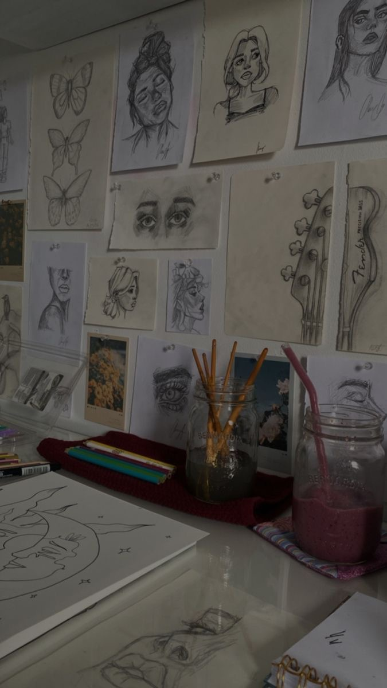
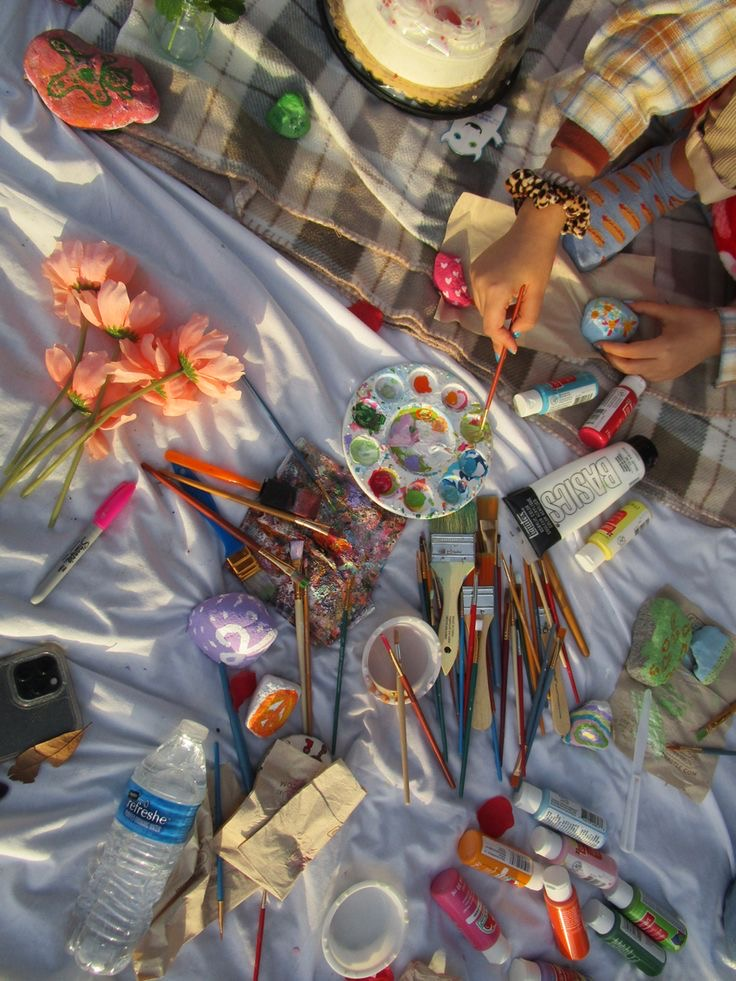

PASJA DO MALOWANIA JEST JAK GŁĘBOKA RZEKA, PŁYNĄCA PRZEZ DUSZĘ ARTYSTY, NAPĘDZANA NIEZGASZONĄ ŻĄDZĄ
WYRAŻANIA SIEBIE I OTACZAJĄCEGO ŚWIATA POPRZEZ BARWY, FORMY I TEKSTURY. TO NIE TYLKO UMIEJĘTNOŚĆ,
ALE RÓWNIEŻ DROGA ŻYCIOWA, PEŁNA ODKRYĆ, WYZWAŃ I WZRUSZEŃ, KTÓRE PROWADZĄ DO NIEUSTANNEGO ROZWOJU
ARTYSTYCZNEGO.
DLA PASJONATA MALARSTWA, KAŻDY POCIĄGNIĘTY PĘDZLEM LUB KAŻDY RUCH KREDKI TO AKT INTYMNEGO WYRAŻENIA
EMOCJI I MYŚLI. MALARZ ODCZUWA NIEODPARTĄ POTRZEBĘ ODDANIA SWOJEGO WNĘTRZA NA PŁÓTNIE LUB INNYM
MEDIUM, TWORZĄC DZIEŁA, KTÓRE NIE TYLKO WZRUSZAJĄ, ALE TAKŻE INSPIRUJĄ I PRZEMAWIAJĄ DO DUSZY WIDZA.
TA PASJA DO MALOWANIA JEST NIEUSTAJĄCYM POSZUKIWANIEM PIĘKNA WE WSZYSTKICH JEGO FORMACH.
MALOWANIE TO TAKŻE PROCES SAMOROZWOJU I SAMOPOZNANIA. POPRZEZ TWORZENIE, ARTYSTA ZGŁĘBIA SWOJE
EMOCJE, PRZEMYŚLENIA I MARZENIA, ODKRYWAJĄC GŁĘBSZE WARSTWY SWOJEJ OSOBOWOŚCI I TKWIĄCE W NIEJ
BOGACTWO.
PASJA DO MALOWANIA NIE ZNA GRANIC CZASOWYCH. CZAS ZNIKA, GDY ARTYSTA ZANURZA SIĘ W SWOJEJ PRACY,
CAŁKOWICIE POCHŁONIĘTY PROCESEM TWORZENIA. MOGĄ TO BYĆ GODZINY SPĘDZONE NA ANALIZOWANIU ŚWIATŁA I
CIENIA, DNI EKSPERYMENTOWANIA Z NOWYMI TECHNIKAMI, CZY TEŻ TYGODNIE PRACY NAD JEDNYM DZIEŁEM,
DOPRACOWUJĄC KAŻDY SZCZEGÓŁ.
JEDNAKŻE, NAJWAŻNIEJSZE JEST TO, ŻE PASJA DO MALOWANIA NIE KOŃCZY SIĘ NA SAMYM AKCIE TWÓRCZYM.
DZIEŁA ARTYSTYCZNE STAJĄ SIĘ ŚWIADECTWEM JEGO ŻYCIA, PRZEMAWIAJĄC DO WIDZÓW Z CAŁEGO ŚWIATA.
